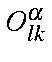
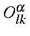

In order to calculate the spin-state, the expectation value of S2 is
calculated.
where Cik is the coefficient of microstate
Ψi
in State  ,
Niα
is the number of alpha electrons in microstate Ψi,
Niβ
is the number of beta electrons in microstate Ψi,

is the occupancy of alpha M.O. l in microstate Ψk,
Olkβ
is the occupancy of beta M.O. l in microstate Ψk,
I+ is the spin shift up or step up operator, and I
is the spin shift
down or step down operator.
,
Niα
is the number of alpha electrons in microstate Ψi,
Niβ
is the number of beta electrons in microstate Ψi,

is the occupancy of alpha M.O. l in microstate Ψk,
Olkβ
is the occupancy of beta M.O. l in microstate Ψk,
I+ is the spin shift up or step up operator, and I
is the spin shift
down or step down operator.
The spin state is calculated from:
In practice, S is calculated to be exactly integer, or half
integer. That is, there is insignificant error due to approximations used.
This does not mean, however, that the method is accurate. The spin
calculation is completely precise, in the group theoretic sense, but the
accuracy of the calculation is limited by the Hamiltonian used, a
space-dependent function.
![\begin{eqnarray*}<\Phi_k\vert S^2\vert\Phi_k> & = & S(S+1) = S_z^2 + 2 I^+I^- \\...
...ft[C_{ik}C_{jk} [\delta(\Psi_i,(I^+I^-)\Psi_j) ]\right]
\right\}
\end{eqnarray*}](img970.gif)